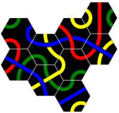
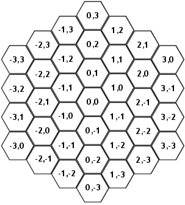

Home Page
F.A.Qs
Statistical Charts
Past Contests
Scheduled Contests
Award Contest
| Online Judge | Problem Set | Authors | Online Contests | User | ||||||
|---|---|---|---|---|---|---|---|---|---|---|
| Web Board Home Page F.A.Qs Statistical Charts | Current Contest Past Contests Scheduled Contests Award Contest | |||||||||
|
Language: Tantrix
Description Tantrix is a two player game played with 56 hexagonal tiles. Each tile contains three links in different colours. Both players have five tiles in hand and take turns in placing them on the playing field. The figure to the right shows how the game could have progressed after nine played tiles.
There are four different link colours: red, green, yellow and blue. No two tiles are identical, and no tile is rotation symmetric. A tile will be described in the input as a six letter string, specifying the link colours in clockwise direction. The uppercase letters 'R', 'G', 'Y' and 'B' will be used for red, green, yellow and blue, respectively. In this problem, a move is defined as placing one of the tiles in hand somewhere on the playing field, subject to these rules:
 If there are one or more forced spaces and the player can't place any of his tiles in hand in those spaces, he will have to play any other legal move. Note that a player may not be allowed to place a tile in a forced space due to rule 4. If there are one or more forced spaces and the player can't place any of his tiles in hand in those spaces, he will have to play any other legal move. Note that a player may not be allowed to place a tile in a forced space due to rule 4.
The figure on the right illustrates these rules. There are three forced spaces. The interposed tile may not be placed in the lower left forced space, as that would create a new forced space with three red links. The dark gray spaces lie on controlled sides created by the forced spaces; no tiles may be placed there. If the player to move can't place a tile in any of the three forced spaces, he must place a tile in any of the white spaces. Your task is to count the number of legal moves the player to move has, given the position and orientation of already played tiles and the tiles in hand for the player to move. If a tile can be placed at several locations, or in several orientations, each such combination is counted as a distinct move. Input The first line in the input will contain the number of cases (at most 50).
Each case begins with a single line containing an integer n (1 ≤ n ≤ 20), the number of tiles that have already been played. Then follow n lines containing the coordinates and description of these tiles. The first character in the tile description belongs to the link facing up; the remaining colours follow as per usual in clockwise direction. Then follows a line with the description of the five tiles in hand, the tile descriptions being separated with a single space. The mapping between the spaces and the coordinates is shown in the figure below (note that the playing field is infinite and not restricted to these coordinates). All tiles in the input will be valid and distinct. The layout will represent a position that could have arisen from a legal game. One of the played tiles will have coordinates 0,0. Output For each test case, output a single line containing an integer: the number of legal moves. Sample Input 2 6 0 0 BRYRBY 1 0 GRGBRB -1 1 GGYBYB 0 1 YYBBGG -2 2 YYBGBG -3 3 BYGYGB BBRRGG GBYBYG RBRBGG GYBGBY GRBBRG 4 0 0 BYYGBG -1 1 GRGBBR 1 0 YRBRYB 2 0 YGGRRY RBBRYY GBGYBY YBBRYR YBYBRR RBBRGG Sample Output 46 2 Source |
[Submit] [Go Back] [Status] [Discuss]
All Rights Reserved 2003-2013 Ying Fuchen,Xu Pengcheng,Xie Di
Any problem, Please Contact Administrator